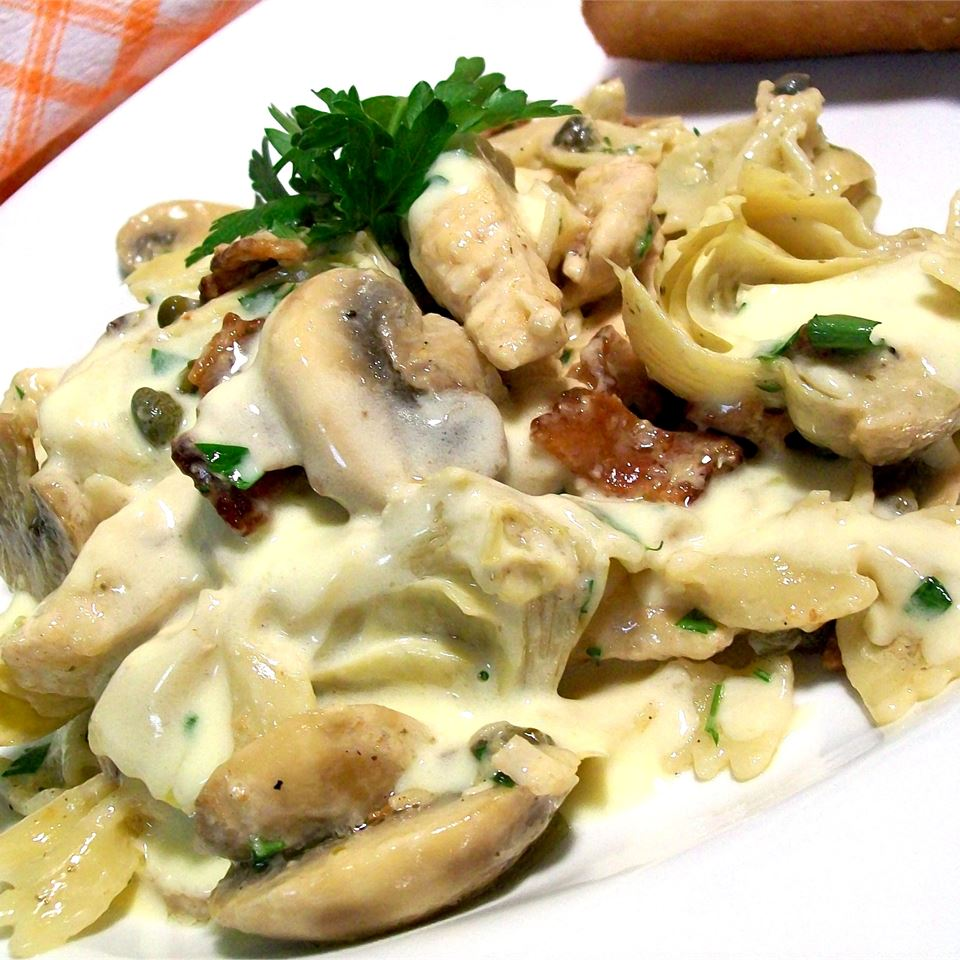

Italian Lemon Butter Chicken

Description
"About eight years ago, a dear Italian woman introduced me to this dish. She has since passed away and taken her recipes with her, as she had nothing written down. This is the closest of all my attempts to duplicate her dish. It is delicious and easier to make than it looks." -Urbanchick
Ingredients
Lemon Butter Sauce
- 1/4 cup white wine
- 5 tbsp fresh lemon juice
- 5 tbsp heavy cream
- 1 cup of butter, chilled
- Salt and pepper (to taste)
Chicken & Pasta
- 1/2 pound dry farfalle (bow tie) pasta
- 4 skinless, boneless chicken breast halves - pounded to 1/4 inch thickness
- 1 tbsp olive oil
- 1 tbsp butter
- 1/4 cup all-purpose flower
- Salt and pepper (to taste)
- 4 ounces bacon
- 6 ounces mushrooms, sliced
- 6 ounces artichoke hearts, drained and halved
- 2 tsp capers, drained
- Chopped fresh parsley for garnish
Steps
- To make the sauce, pour the wine and lemon juice into a saucepan over medium heat. Cook at a low boil until the liquid is reduced by 1/3. Stir in cream, and simmer until it thickens. Gradually add the butter 1 tablespoon at a time to the sauce, stirring until completely incorporated. Season with salt and pepper. Remove from heat, and keep warm.
- Bring a large pot of lightly salted water to boil. Add pasta, and cook until al dente, about 8 to 10 minutes. Drain, and set aside.
- To make the chicken, heat oil and 2 tablespoons butter in a large skillet over medium heat. In a bowl, stir together flour, salt, and pepper. Lightly coat chicken with flour mixture. Without crowding, carefully place chicken in hot oil. (If necessary, cook in batches.) Fry until cooked through and golden brown on both sides. Remove the chicken to paper towels. Stir the bacon, mushrooms, artichokes, and capers into the oil; cook until the mushrooms are soft.
- Cut the chicken breasts into bite-size strips, and return them to the skillet. Stir half of the lemon butter sauce into the chicken mixture.
- To serve, place pasta in a large bowl. Stir the chicken mixture into the pasta. Taste, and adjust seasonings. Stir in additional lemon butter sauce as desired. Toss well, and garnish with parsley.
Nutrition facts per serving: 660 calories; protein 26.8g; carbohydrates 37.4g; fat 44.9g; cholesterol 155mg; sodium 660.3mg.
Source